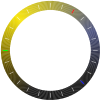

<!--  -->
<!--  -->


<svg height="1300px" width="1300px" style="position:fixed;left:0px;right:0px;zoom:0.5">
  <line x1="650" y1="650" x2="0" y2="650" style="stroke:rgb(255,0,0);stroke-width:10;z-index:-100;transform:rotate(0deg);transform-origin:center;zoom:0.5">
</svg>

<script>
    console.log("hey")
    var d = new Date();

    var utc = d.getTime() + (d.getTimezoneOffset() * 60000);

    var offset = 2
    var nd = new Date(utc + (3600000*offset));

  var angle = 360/24 * (nd.getHours() - 9 + nd.getMinutes()/60);
  document.querySelector("svg").style.transform = "rotate(" + angle + "deg)"

</script>